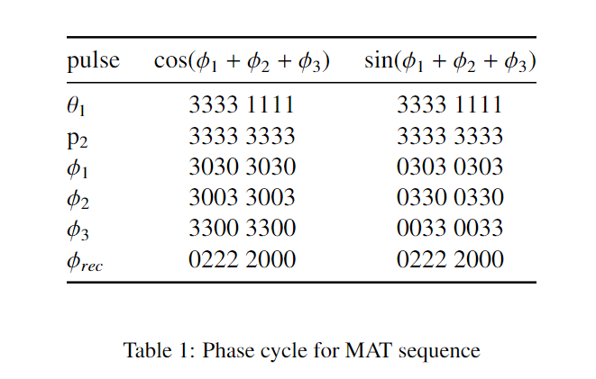
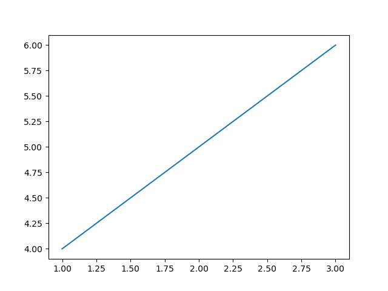
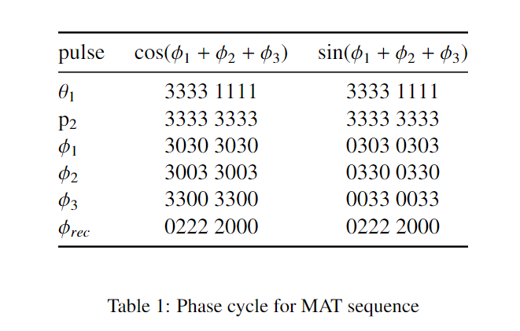
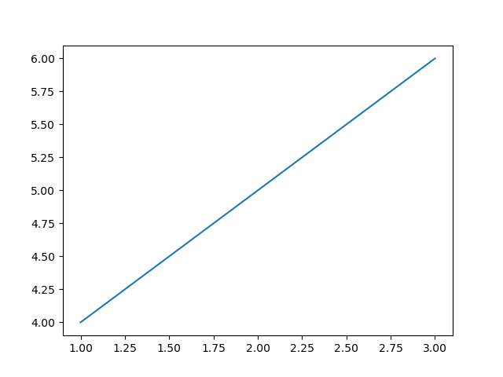

Note
Click here to download the full example code
Magic angle turning example¶
 



from matplotlib import pyplot as plt
import numpy as np
if __name__ == "__main__":
plt.plot([1,2,3],[4,5,6])
Total running time of the script: ( 0 minutes 0.060 seconds)